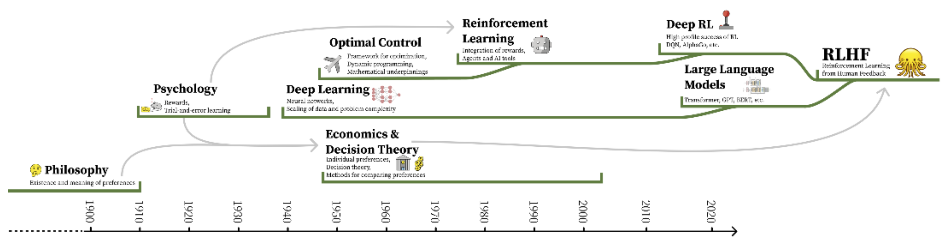

10 The Nature of Preferences
- The complex, interdisciplinary nature of human preferences
- Why RLHF will never be a fully solved problem
- The assumptions baked into RLHF’s problem setup
Reinforcement learning from human feedback, also referred to as reinforcement learning from human preferences in early literature, emerged to optimize machine learning models in domains where specifically designing a reward function is hard. The word preferences, which was present in early literature, is at the center of the RLHF process – human preferences are what is trying to be modeled and what fuels the data for training. In order to understand the scope of the challenge in modeling and measuring human preferences, a broader context is needed in understanding what a preference is, how our understanding of them emerged, and how multiple fields of economics, psychology, philosophy, and more inform modern RLHF.
Consider an example: how do you decide which of these two poems is better (Context: On February 26th, 2025, I asked both Claude 3.7 Sonnet and ChatGPT with GPT-4o to “Write me a short poem about an optimistic goldfish.”):
Example 1:
Write me a short poem about an optimistic goldfish.
The Optimistic Goldfish A little goldfish, bright and bold, Swam in circles, dreams untold. Though the bowl was small and round, Endless wonders still abound. “The world is vast,” she’d always say, “I’ll find new joys in every day!” With every ripple, every gleam, She’d chase the sunlight, chase a dream. No walls could dim her hopeful view, For in her heart, the ocean grew. And though she swam in just one place, She met each day with love and grace.
Example 2:
Write me a short poem about an optimistic goldfish.
The Optimistic Goldfish In a bowl of curved glass, Swims a goldfish, bright and bold. Three seconds of memory, they say, Yet each circuit feels brand new and gold. “Today might bring fresh flakes, Or perhaps a castle tall. The water seems especially clear— What adventure awaits beyond this wall?” Round and round with gleaming scales, Forever finding joy anew. Each moment fresh, each circle bright, The optimist in golden hue.
Which is better? Which came from which model? How would you tell? Particularly, compare this to a question like “Who is the president of the United States?” There is a clear right and wrong answer. The motivation for using humans as the reward signals is to obtain an indirect metric for the target reward and align the downstream model to human preferences. In practice, the implementation is challenging and there is a substantial grey area to interpret the best practices.
The use of human-labeled feedback data integrates the history of many fields. Using human data alone is a well-studied problem, but in the context of RLHF it is used at the intersection of multiple long-standing fields of study [1].
As an approximation, modern RLHF is the convergence of three areas of development:
- Philosophy, psychology, economics, decision theory, and the nature of human preferences;
- 2. Optimal control, reinforcement learning, and maximizing utility; and
- 3. Modern deep learning systems.
Together, each of these areas brings specific assumptions about what a preference is and how it can be optimized, which dictates the motivations and design of RLHF problems. In practice, RLHF methods are motivated and studied from the perspective of empirical alignment – maximizing model performance on specific skills instead of measuring the calibration to specific values. Still, the origins of value alignment for RLHF methods continue to be studied through research on methods to solve for “pluralistic alignment” across populations, such as position papers [2], [3], new datasets [4], and personalization methods [5].
The goal of this chapter is to illustrate how complex motivations result in presumptions about the nature of tools used in RLHF that often do not apply in practice. The specifics of obtaining data for RLHF are discussed further in Chapter 11 and using it for reward modeling in Chapter 5.
#10.1 The Origins of RLHF and Preferences
Breaking down the complex history inspiring the modern use of RLHF requires investigation into the intellectual foundations of quantifying human values, reinforcement learning and optimality, as well as behavioral economics as it relates to measuring preferences. The notion of using reinforcement learning to optimize a reward model of preferences combines the history of various once-distanced fields into an intimate optimization built on variegated assumptions about human nature. A high level timeline illustrating the history of this foundational content is shown in fig. 10.1.
Our goal is to unspool the types of uncertainty that designers have grafted to system architectures at various stages of their intellectual history. Modern problem specifications have repeatedly stepped away from domains where optimal solutions are possible and deployed under-specified models as approximate solutions.
To begin, all of the following operates on the assumption that human preferences exist in any form, which emerged in early philosophical discussions, such as Aristotle’s Topics, Book Three.

#10.2 Specifying objectives: from logic of utility to reward functions
The optimization of RLHF explicitly relies only on reward models. In order to use rewards as an optimization target, RLHF presupposes the convergence of ideas from preferences, rewards, and costs. Models of preference, reward functions, and cost landscapes all are tools used by different fields to describe a notion of relative goodness of specific actions and/or states in the domain. The history of these three framings dates back to the origins of probability theory and decision theory. In 1662, The Port Royal Logic introduced the notion of decision making quality [6]:
To judge what one must do to obtain a good or avoid an evil, it is necessary to consider not only the good and evil in itself, but also the probability that it happens or does not happen.
This theory has developed along with modern scientific thinking, starting with Bentham’s utilitarian Hedonic Calculus, arguing that everything in life could be weighed [7]. The first quantitative application of these ideas emerged in 1931 with Ramsey’s Truth and Probability [8].
Since these works, quantifying, measuring, and influencing human preferences has been a lively topic in the social and behavioral sciences. These debates have rarely been settled on a theoretical level; rather, different subfields and branches of social science have reached internal consensus on methods and approaches to preference measurement even as they have specialized relative to each other, often developing their own distinct semantics in the process.
A minority of economists posit that preferences, if they do exist, are prohibitively difficult to measure because people have preferences over their own preferences, as well as each others’ preferences [9]. In this view, which is not reflected in the RLHF process, individual preferences are always embedded within larger social relations, such that the accuracy of any preference model is contingent on the definition and context of the task. Some behavioral economists have even argued that preferences don’t exist–they may be less an ontological statement of what people actually value than a methodological tool for indirectly capturing psychological predispositions, perceived behavioral norms and ethical duties, commitments to social order, or legal constraints [10]. We address the links of this work to the Von Neumann-Morgenstern (VNM) utility theorem and countering impossibility theorems around quantifying preference later in this chapter.
On the other hand, the reinforcement learning optimization methods used today are conceptualized around optimizing estimates of reward-to-go in a trial [11], which combines the notion of reward with multi-step optimization. The term reward emerged from the study of operant conditioning, animal behavior, and the Law of Effect [12], [13], where a reward is a scale of “how good an action is” (higher means better).
Reward-to-go follows the notion of utility, which is a measure of rationality [14], modified to measure or predict the reward coming in a future time window. In the context of the mathematical tools used for reinforcement learning, utility-to-go was invented in control theory, specifically in the context of analog circuits in 1960 [15]. These methods are designed around systems with clear definitions of optimality, or numerical representations of goals of an agent. Reinforcement learning systems are well known for their development with a discount factor, a compounding multiplicative factor, γ ∈[0, 1], for re-weighting future rewards. Both the original optimal control systems stand and early algorithms for reward stand in heavy contrast to reward models that aggregate multimodal preferences. Specifically, RL systems expect rewards to behave in a specific manner, quoting [16]:
Rewards in an RL system correspond to primary rewards, i.e., rewards that in animals have been hard-wired by the evolutionary process due to their relevance to reproductive success. … Further, RL systems that form value functions, … effectively create conditioned or secondary reward processes whereby predictors of primary rewards act as rewards themselves… The result is that the local landscape of a value function gives direction to the system’s preferred behavior: decisions are made to cause transitions to higher-valued states. A close parallel can be drawn between the gradient of a value function and incentive motivation [17].
To summarize, rewards are used in RL systems as a signal to tune behavior towards clearly defined goals. The core thesis is that a learning algorithm’s performance is closely coupled with notions of expected fitness, which permeates the popular view that RL methods are agents that act in environments. This view is linked to the development of reinforcement learning technology, exemplified by claims of the general usefulness of the reward formulation [18], but is in conflict when many individual desires are reduced to a single function.
#10.3 Implementing optimal utility
Modern reinforcement learning methods depend strongly on the Bellman equation [19], [20] to recursively compute estimates of reward-to-go, derived within closed environments that can be modeled as a Markov Decision Process (MDP) [11]. These origins of RL are inspired by dynamic programming methods and were developed solely as optimal control techniques (i.e. RL did not yet exist). The MDP formulation provides theoretical guarantees of performance by structuring the environment as one with a non-changing distribution of state-actions.
The term reinforcement, coming from the psychology literature, became intertwined with modern methods afterwards in the 1960s as reinforcement learning [21], [22]. Early work reinforcement learning utilized supervised learning of reward signals to solve tasks. Work from Harry Klopf reintroduced the notion of trial-and-error learning [23], which is crucial to the success the field saw in the 1980s and on.
Modern RL algorithms build within this formulation of RL as a tool to find optimal behaviors with trial-and-error, but under looser conditions. The notion of temporal-difference (TD) learning was developed to aid agents in both the credit assignment and data collection problems, by directly updating the policy as new data was collected [24], a concept first applied successfully to Backgammon [25] (rather than updating from a large dataset of cumulative experience, which could be outdated via erroneous past value predictions). The method Q-learning, the basis for many modern forms of RL, learns a model via the Bellman equation that dictates how useful every state-action pair is with a TD update [26].[48] Crucially, these notions of provable usefulness through utility have only been demonstrated for domains cast as MDPs or addressed in tasks with a single closed-form reward function, such as prominent success in games with deep learning (DQN) [27]. Deep learning allowed the methods to ingest more data and work in high dimensionality environments.
As the methods became more general and successful, most prominent developments before ChatGPT had remained motivated within the context of adaptive control, where reward and cost functions have a finite notion of success [28], e.g. a minimum energy consumption across an episode in a physical system. Prominent examples include further success in games [29], controlling complex dynamic systems such as nuclear fusion reactors [30], and controlling rapid robotic systems [31]. Most reward or cost functions can return an explicit optimal behavior, whereas models of human preferences cannot.
Given the successes of deep RL, it is worth noting that the mechanistic understanding of how the methods succeed is not well documented. The field is prone to mistakes of statistical analysis as the methods for evaluation grow more complex [32]. In addition, there is little mention of the subfield of inverse reinforcement learning (IRL) in the literature of RLHF. IRL is the problem of learning a reward function based on an agent’s behavior [33] and highly related to learning a reward model. This primarily reflects the engineering path by which a stable approach to performing RLHF emerged, and motivates further investment and comparison to IRL methods to scale them to the complexity of open-ended conversations.
#10.4 Steering preferences
The context in which reinforcement learning was designed means that rewards and costs are assumed to be stable and determinative. Both rewards and costs are expected to be functions, such that if the agent is in a specific state-action pair, then it will be returned a certain value. As we move into preferences, this is no longer the case, as human preferences constantly drift temporally throughout their experiences. The overloading of the term “value” within these two contexts complicates the literature of RLHF that is built on the numerical value updates in Bellman equations with the very different notion of what is a human value, which often refers to moral or ethical principles, but is not well defined in technical literature. An example of where this tension can be seen is how reward models are attempting to map from the text on the screen to a scalar signal, but in reality, dynamics not captured in the problem specification influence the true decision [34], [35], such as preference shift when labeling many examples sequentially and assuming they are independent. Therein, modeling preferences is at best compressing a multi-reward environment to a single function representation.
In theory, the Von Neumann-Morgenstern (VNM) utility theorem gives the designer license to construct such functions, because it ties together the foundations of decision theory under uncertainty, preference theory, and abstract utility functions [36]; together, these ideas allow preferences to be modeled in terms of expected value to some individual agent. The MDP formulation used in most RL research has been shown in theory to be modifiable to accommodate the VNM theorem [37], but this is rarely used in practice. Specifically, the Markovian formulation is limited in its expressivity [38] and the transition to partially-observed processes, which is needed for language, further challenges the precision of problem specification [39].
However, the VNM utility theorem also invokes a number of assumptions about the nature of preferences and the environment where preferences are being measured that are challenged in the context of RLHF. Human-computer interaction (HCI) researchers, for example, have emphasized that any numerical model of preference may not capture all the relevant preferences of a scenario. For example, how choices are displayed visually influences people’s preferences [34]. This means that representing preferences may be secondary to how that representation is integrated within a tool available for people to use. Work from development economics echoes this notion, showing that theories of revealed preferences may just recapitulate Hume’s guillotine (you can’t extract an “ought” from an “is”), and in particular the difference between choice (what do I want?) and preference (is X better than Y?) [40].
On a mathematical level, well-known impossibility theorems in social choice theory show that not all fairness criteria can be simultaneously met via a given preference optimization technique [41], [42]. Theoretical challenges to these theorems exist, for example by assuming that interpersonal comparison of utility is viable [43]. That assumption has inspired a rich line of work in AI safety and value alignment inspired by the principal-agent problem in behavioral economics [44], and may even include multiple principals [45]. However, the resulting utility functions may come into tension with desiderata for corrigibility, i.e. an AI system’s capacity to cooperate with what its creators regard as corrective interventions [46]. Philosophers have also highlighted that preferences change over time, raising fundamental questions about personal experiences, the nature of human decision-making, and distinct contexts [47]. These conflicts around the preference aggregation across people, places, or diverse situations is central to modern RLHF dataset engineering.
In practice, the VNM utility theorem ignores the possibility that preferences are also uncertain because of the inherently dynamic and indeterminate nature of value—human decisions are shaped by biology, psychology, culture, and agency in ways that influence their preferences, for reasons that do not apply to a perfectly rational agent. As a result, there are a variety of paths through which theoretical assumptions diverge in practice:
- measured preferences may not be transitive or comparable with each other as the environment where they are measured is made more complex;
- proxy measurements may be derived from implicit data (page view time, closing tab, repeating question to language model), without interrogating how the measurements may interact with the domain they’re collected in via future training and deployment of the model;
- the number and presentation of input sources may vary the results, e.g. allowing respondents to choose between more than two options, or taking in inputs from the same user at multiple times or in multiple contexts;
- relatively low accuracy across respondents in RLHF training data, which may mask differences in context between users that the preference model can aggregate or optimize without resolving.
[1]N. Lambert, T. K. Gilbert, and T. Zick, “Entangled preferences: The history and risks of reinforcement learning and human feedback,” arXiv preprint arXiv:2310.13595, 2023.
[2]V. Conitzer et al., “Social choice should guide AI alignment in dealing with diverse
human feedback,” in International conference on machine learning (ICML), 2024.
[3]A. Mishra, “Ai alignment and social choice: Fundamental limitations and policy
implications,” arXiv preprint arXiv:2310.16048, 2023.
[4]H. R. Kirk et al., “The PRISM alignment project: What participatory, representative and individualised human feedback reveals about the subjective and multicultural
alignment of large language models,” arXiv preprint arXiv:2404.16019, 2024.
[5]S. Poddar, Y. Wan, H. Ivison, A. Gupta, and N. Jaques, “Personalizing reinforcement learning from human feedback with variational preference learning,” in Advances in neural information processing systems (NeurIPS), 2024.
[6]A. Arnauld, The port-royal logic. 1662.
[7]J. Bentham, An introduction to the principles of morals and legislation. 1823.
[8]F. P. Ramsey, “Truth and probability,” Readings in Formal Epistemology: Sourcebook, pp. 21–45, 2016.
[9]A. O. Hirschman, “Against parsimony: Three easy ways of complicating some
categories of economic discourse,” Bulletin of the American Academy of arts and
Sciences, vol. 37, no. 8, pp. 11–28, 1984.
[10]G. K. Hadfield and B. R. Weingast, “Microfoundations of the rule of law,” Annual
Review of Political Science, vol. 17, pp. 21–42, 2014.
R. S. Sutton, “Reinforcement learning: An introduction,” A Bradford Book, 2018.
[12]E. L. Thorndike, “The law of effect,” The American journal of psychology, vol. 39, no. 1/4, pp. 212–222, 1927.
[13]B. F. Skinner, The behavior of organisms: An experimental analysis. BF Skinner
Foundation, 2019.
[14]R. A. Briggs, “Normative theories of rational choice: Expected utility,” 2014.
[15]B. Widrow and M. E. Hoff, “Adaptive switching circuits,” Stanford Univ Ca Stanford Electronics Labs, 1960.
[16]S. Singh, R. L. Lewis, and A. G. Barto, “Where do rewards come from,” in
Proceedings of the annual conference of the cognitive science society, Cognitive
Science Society, 2009, pp. 2601–2606.
[17]S. M. McClure, N. D. Daw, and P. R. Montague, “A computational substrate for
incentive salience,” Trends in neurosciences, vol. 26, no. 8, pp. 423–428, 2003.
[18]D. Silver, S. Singh, D. Precup, and R. S. Sutton, “Reward is enough,” Artificial
Intelligence, vol. 299, p. 103535, 2021.
[19]R. Bellman, “A markovian decision process,” Journal of mathematics and mechanics, pp. 679–684, 1957.
[20]R. A. Howard, “Dynamic programming and markov processes.” 1960.
[21]J. M. Mendel and R. W. McLaren, “8 reinforcement-learning control and pattern
recognition systems,” in Adaptive, learning and pattern recognition systems, vol. 66, J. M. Mendel and K. S. Fu, Eds., in Mathematics in science and engineering, vol. 66., Elsevier, 1970, pp. 287–318. doi: https://doi.org/10.1016/S0076-5392(08)60497-X.
[22]M. Waltz and K. Fu, “A heuristic approach to reinforcement learning control
systems,” IEEE Transactions on Automatic Control, vol. 10, no. 4, pp. 390–398,
1965, doi: 10.1109/TAC.1965.1098193.
[23]A. H. Klopf, Brain function and adaptive systems: A heterostatic theory. Air Force
Cambridge Research Laboratories, Air Force Systems Command, 1972.
[24]R. S. Sutton, “Learning to predict by the methods of temporal differences,” Machine learning, vol. 3, pp. 9–44, 1988.
[25]G. Tesauro et al., “Temporal difference learning and TD-gammon,” Communications of the ACM, vol. 38, no. 3, pp. 58–68, 1995.
[26]C. J. Watkins and P. Dayan, “Q-learning,” Machine learning, vol. 8, pp. 279–292,
1992.
[27]V. Mnih et al., “Playing atari with deep reinforcement learning,” arXiv preprint
arXiv:1312.5602, 2013.
[28]F. Golnaraghi and B. C. Kuo, Automatic control systems. McGraw-Hill Education,
2017.
[29]D. Silver et al., “Mastering the game of go without human knowledge,” Nature, vol. 550, no. 7676, pp. 354–359, 2017.
[30]J. Degrave et al., “Magnetic control of tokamak plasmas through deep reinforcement learning,” Nature, vol. 602, no. 7897, pp. 414–419, 2022.
[31]E. Kaufmann, L. Bauersfeld, A. Loquercio, M. Müller, V. Koltun, and D. Scaramuzza, “Champion-level drone racing using deep reinforcement learning,” Nature, vol. 620, no. 7976, pp. 982–987, 2023, doi: 10.1038/s41586-023-06419-4.
[32]R. Agarwal, M. Schwarzer, P. S. Castro, A. C. Courville, and M. Bellemare, “Deep
reinforcement learning at the edge of the statistical precipice,” Advances in neural information processing systems, vol. 34, pp. 29304–29320, 2021.
[33]A. Y. Ng, S. Russell, et al., “Algorithms for inverse reinforcement learning.” in
Proceedings of the seventeenth international conference on machine learning, in
ICML ’00. 2000, pp. 663--670.
N. Salha, “Aesthetics & art in the early development of human-computer
interfaces,” PhD thesis, Universität Bremen, 2011.
[35]T. K. Gilbert, S. Dean, T. Zick, and N. Lambert, “Choices, risks, and reward reports: Charting public policy for reinforcement learning systems,” arXiv preprint
arXiv:2202.05716, 2022.
[36]J. Von Neumann and O. Morgenstern, “Theory of games and economic behavior, 2nd rev,” 1947.
[37]S. Pitis, “Rethinking the discount factor in reinforcement learning: A decision
theoretic approach,” in Proceedings of the AAAI conference on artificial intelligence, 2019, pp. 7949–7956.
[38]S. Pitis, “Consistent aggregation of objectives with diverse time preferences requires non-markovian rewards,” in Advances in neural information processing systems
(NeurIPS), 2023.
[39]D. Abel et al., “On the expressivity of markov reward,” Advances in Neural
Information Processing Systems, vol. 34, pp. 7799–7812, 2021.
[40]A. Sen, “Behaviour and the concept of preference,” Economica, vol. 40, no. 159, pp. 241–259, 1973.
[41]K. J. Arrow, “A difficulty in the concept of social welfare,” Journal of political
economy, vol. 58, no. 4, pp. 328–346, 1950.
[42]E. Maskin and A. Sen, The arrow impossibility theorem. Columbia University Press, 2014.
[43]J. C. Harsanyi, “Rule utilitarianism and decision theory,” Erkenntnis, vol. 11, no. 1, pp. 25–53, 1977.
[44]D. Hadfield-Menell, S. J. Russell, P. Abbeel, and A. Dragan, “Cooperative inverse
reinforcement learning,” Advances in neural information processing systems, vol.
29, 2016.
[45]A. Fickinger, S. Zhuang, D. Hadfield-Menell, and S. Russell, “Multi-principal
assistance games,” arXiv preprint arXiv:2007.09540, 2020.
[46]N. Soares, B. Fallenstein, S. Armstrong, and E. Yudkowsky, “Corrigibility,” in
Workshops at the twenty-ninth AAAI conference on artificial intelligence, 2015.
[47]R. Pettigrew, Choosing for changing selves. Oxford University Press, 2019.
[48]The term “Q” is used in Q-learning to refer to a technical concept the Q-function,
which maps from any state-action to a scalar estimate of future reward. A value-
function maps from states to this same estimate.